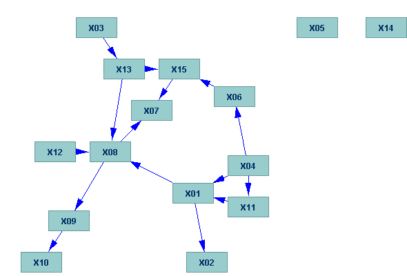

Saving Screenshots |
Most editors in Tetrad, along with the main workspace area have a menu item in their File menu called "Save Screenshot..." Editors that display graphs also have a second menu item called "Save Graph Image..." These save PNG images of the dialog being displayed and the graph being displayed, respectively.
To show how these menu items function, consider the editor for Directed Acyclic Graphs. If you select Save Screenshot from the File menu of this editor, you wil see a Save dialog asking you for a filename. If you type a filename (or accept the default) click "Save" a PNG image will be saved for you that looks something like this:
Notice that part of the graph is obscured. To save the entire image of just the graph, select "Save Graph Image." If you do this, you will get an image something like this:
